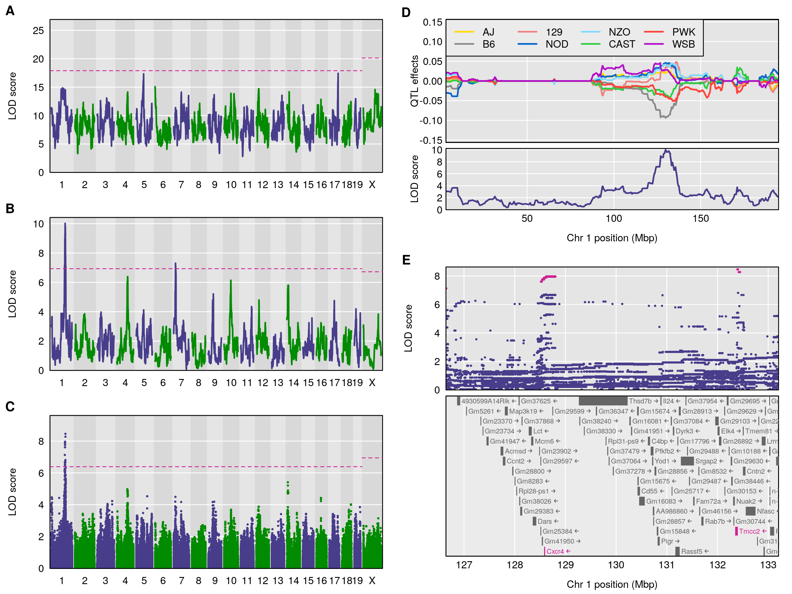

Broman KW, Gatti DM, Simecek P, Furlotte NA, Prins P, Sen Ś,
Yandell BS, Churchill GA (2019)
R/qtl2: software for mapping quantitative trait loci with
high-dimensional data and multi-parent populations.
Genetics 211:495-502



Figure 1. — Reconstruction of Fig. 5 from Gatti et al. (2014), on the mapping of constitutive neutrophil counts in 742 Diversity Outbred mice. (A) LOD scores from a genome scan using the full model (comparing all 36 genotypes for the autosomes and 44 genotypes for the X chromosome); the dashed horizontal line indicates the 5\% genome-wide significance threshold, based on a permutation test. (B) LOD scores from a genome scan with an additive allele model (compare the 8 founder haplotypes). (C) LOD scores from a SNP association scan, using all SNPs that were genotyped in the eight founder lines. (D) Best linear unbiased predictors (BLUPs) of the eight haplotype effects in the additive model, along with the LOD curve on chromosome 1. (E) SNP association results in the region of the chromosome 1 QTL, along with genes in the region; SNPs with LOD scores within 1.5 of the maximum are highlighted in pink. All figures are produced with R/qtl2.